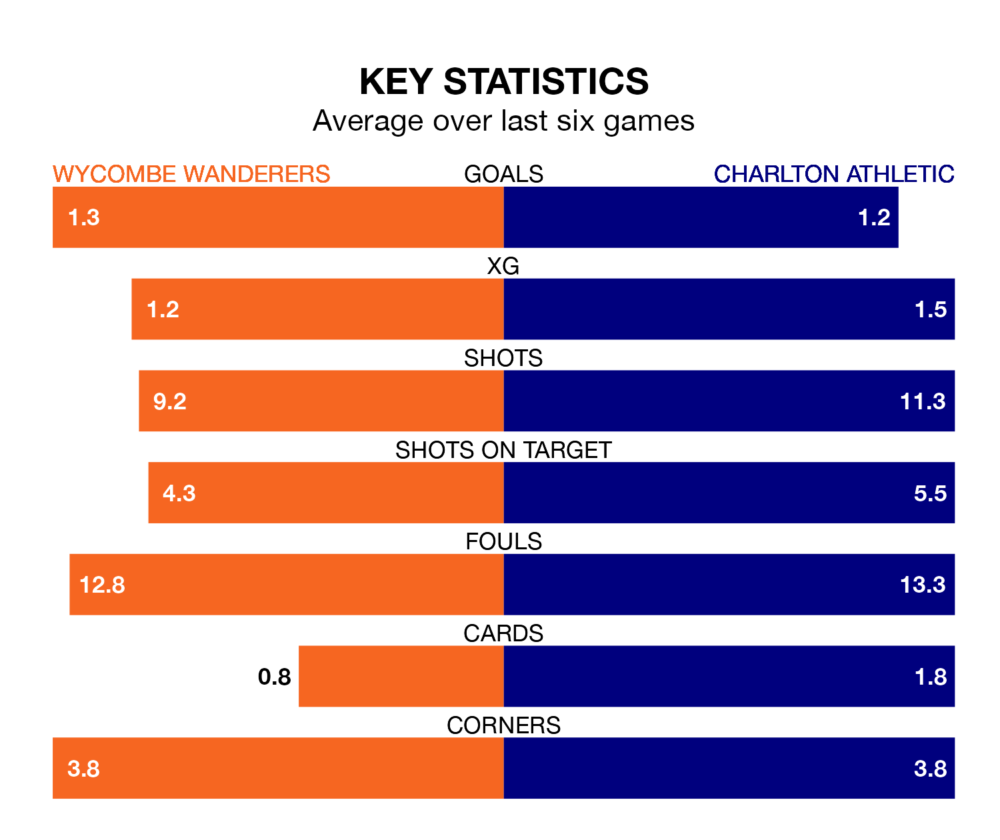

Charlton Athletic face Wycombe Wanderers on Saturday seeking to protect their formidable unbeaten run in EFL League One.
The Addicks are unbeaten in 14, with four wins and 10 draws, ahead of the 12.30pm kick-off.
They face a Wycombe team who have won seven and drawn four over the same number of games.
In Alfie May, Charlton have the league's most on-form striker so far this season. He has notched 23 goals in 42 appearances.
His goal rate of one every 149 minutes is much quicker than that of Luke Leahy, Wycombe's top scorer with a goal every 355 minutes, and a total of 10 goals in 43 games.
In the last 10 years, Wycombe and Charlton have played each other on seven occasions. Wycombe won two of them, Charlton three, and they drew twice.
On average, the Chairboys scored 1.1 goals and the Addicks 1.4 in those matches.
Their last meeting was on September 23, when Charlton won 3-1 at home.
With 64 goals in 45 games so far this season, Athletic are scoring more than average in the league with 1.4 goals per game. But they are conceding more than average too, letting in 64 goals at a rate of 1.4 per game.
Wanderers, meanwhile, are average scorers, with 1.3 goals per game. They have conceded 1.2 goals per game.
The Addicks are 17th in the table after 45 games, of which they have won 11 and drawn 20, earning 53 points.
The Chairboys are six places ahead of the visitors in 11th, with 16 wins and 14 draws putting them on 62 points.
Wycombe's last match was on Tuesday, a 1-1 draw against Cambridge United, with Leahy getting the goal for the Chairboys.
Charlton drew 1-1 with Shrewsbury Town last time out, on Saturday, with George Dobson on the scoresheet.
Updated: 07:59 (UTC), 26/04/24